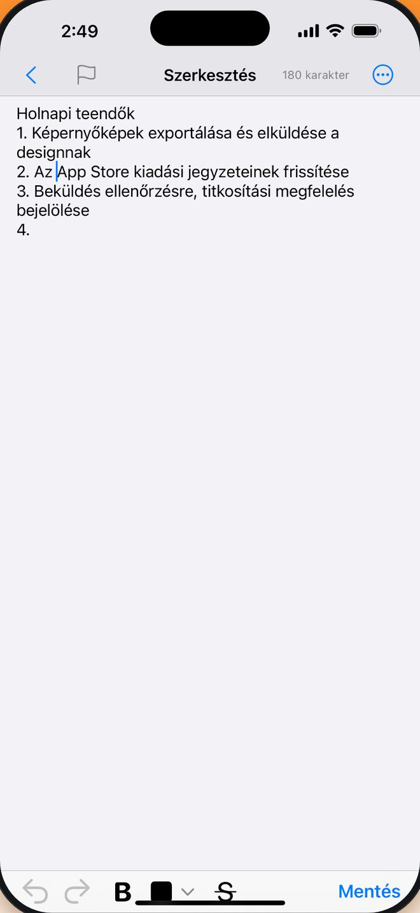
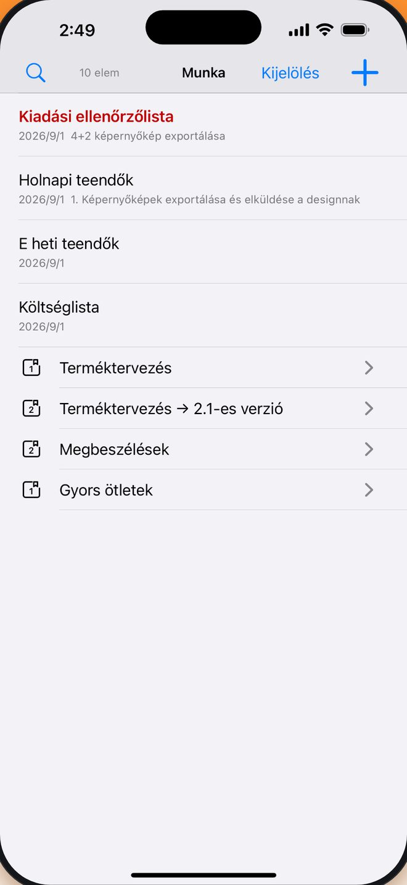
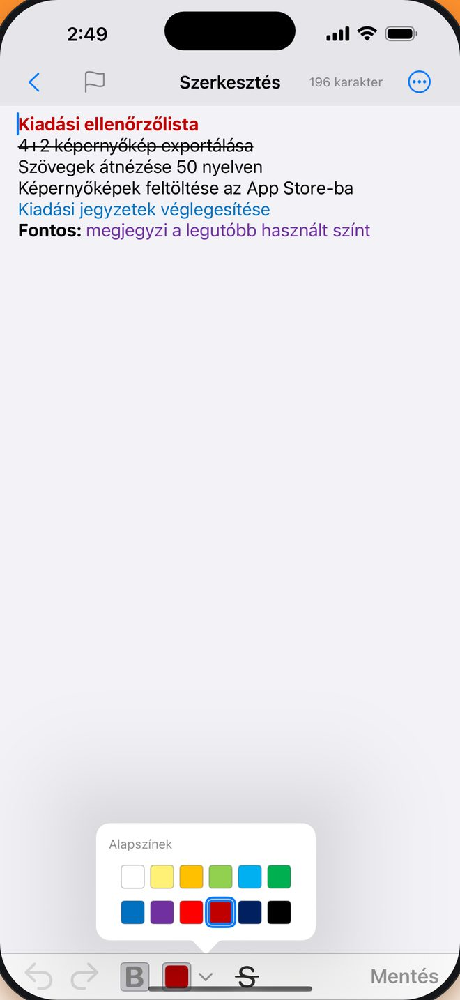
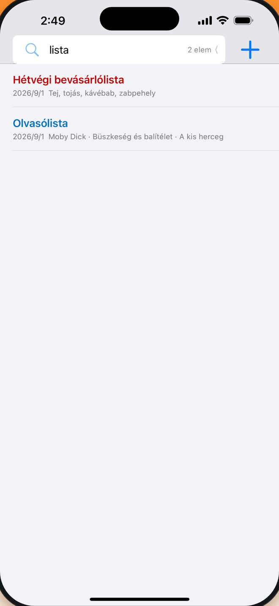
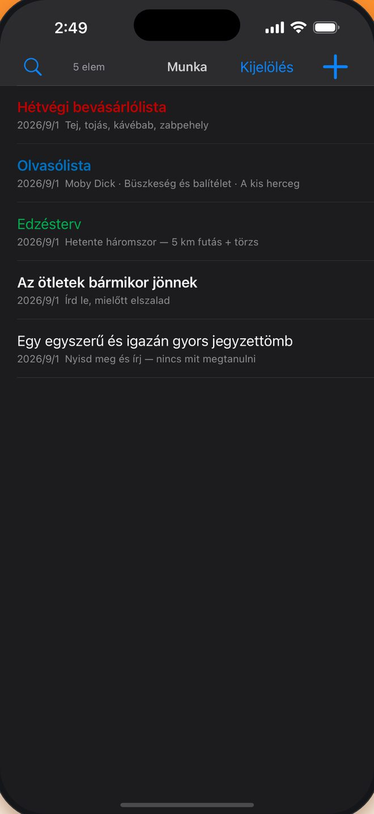
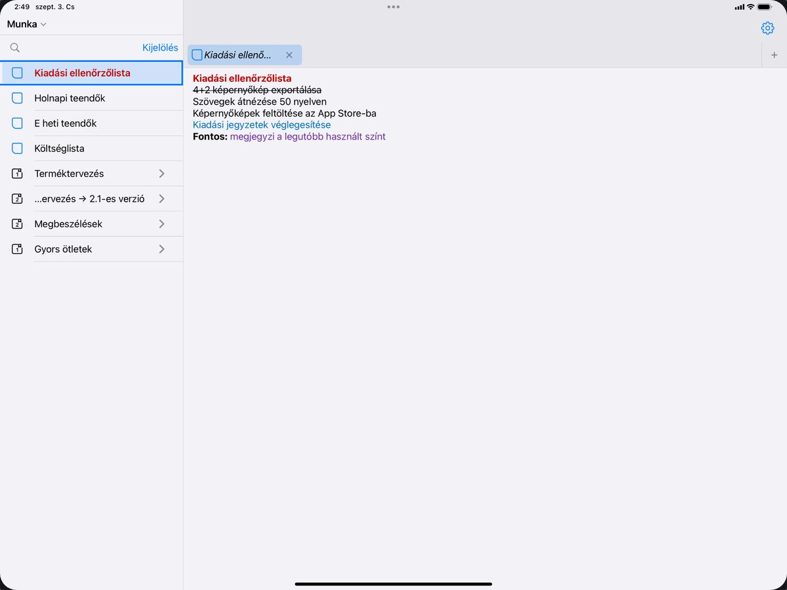

Ingyenes
Nincs fizetős csomag — minden írásfunkció benne van.
Ingyenes · iPhone és iPad · 50 nyelv
Ha olyan jegyzetalkalmazást keresel, amelyet csak megnyitsz és írsz, menet közben rendezel, és soha nem veszítesz el egy szót sem, a Mini Jegyzetek neked készült.
Megosztás
Röviden
Nincs fizetős csomag — minden írásfunkció benne van.
Egyetlen univerzális app, iOS 16.0 vagy újabb.
Követi a rendszernyelvet, vagy a Beállításokban te választasz.
Helyi adatbázis, lemezen titkosítva. A jegyzetek tartalma nem kerül fel sehová.
Ráadásul félkövér és áthúzott, egyenesen a szerkesztősávon.
Jegyzetfüzet → csoport → jegyzet, olyan mélyen, ahogy jólesik.
Még ha hívás érkezik, az alkalmazás megszakad vagy lemerül az akku, a nem mentett tartalom magától visszatér. Nem kell mentés gombot keresned — csak írj.

Kezeld így: „Jegyzetfüzet → Csoport → Jegyzet”, csoportokat több szinten egymásba ágyazva a bonyolult szerkezetekhez — vagy hagyd ki a rendszerezést, és írj azonnal.

A szerkesztő félkövéret, áthúzottat és 12 színű palettát kínál, és megjegyzi a legutóbb használt színt. A címek átveszik a szöveg formázását, így a listanézet tisztább.
12 szín · félkövér · áthúzott
A szerkesztő megjegyzi a legutóbb használt színt, így a következő jegyzet pontosan onnan folytatódik, ahol abbahagytad.

Írj be egy kulcsszót — a jegyzetek azonnal szűrődnek

Automatikusan követi a rendszert

iPad
Balra a jegyzetlista, jobbra a szerkesztő és az előzményfülek — az olvasás és az írás többé nem lóg egymás útjába. Csatlakoztass egy billentyűzetet, és az egész app hallgat a gyorsbillentyűkre.

⌘N új, ⌘1–9 lapok, ⌃Tab az oldalsávhoz
Billentyűparancsok
Gyakori kérdések
Igen. A letöltés és a használat semmibe sem kerül, és egyetlen írásfunkció sincs fizetős fal mögött.
Írás közben a piszkozat folyamatosan a készülékre mentődik. Nyisd meg újra az appot, és minden ott van — egészen addig a sorig, ahol a kurzor állt.
Nem. Nincs regisztráció és nincs bejelentkezés. Megnyitod az appot, és az első jegyzet egyetlen koppintásra van.
iPhone-on és iPaden, iOS 16.0 vagy újabb rendszerrel.
A készülékeden, egy lemezen titkosított helyi adatbázisban. A jegyzetek tartalma nem megy szerverre.
Igen. Koppints a Safariban vagy más appban a «Megosztás» gombra, és válaszd a Mini Jegyzetek appot — a link vagy a szöveg a beérkezettek közé kerül, és új jegyzet lesz.
Ingyenes az App Store-ban. iPhone és iPad, iOS 16.0 vagy újabb.
Letöltés az App Store-ból